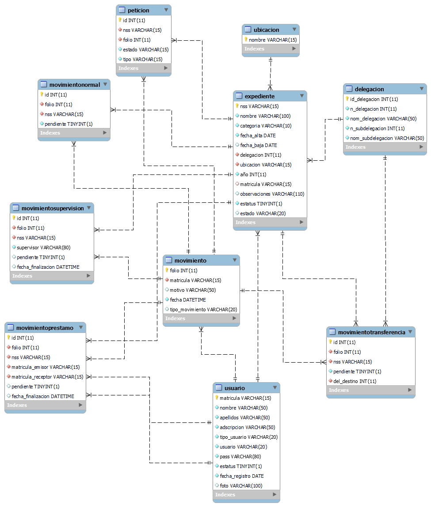

Reporte del proyecto
Escrito por: Miguel Ángel Diosdado Rodríguez y Fernanda Montserrat Hernández ÁvilaFecha: 08 de octubre de 2024

Nombre del proyecto y enfoque
SIMAPE (por sus siglas Sistema de Manejo de Pensiones) es una aplicación web diseñada para llevar el control de los documentos relacionados a las pensiones de los trabajadores registrados en el sistema del seguro social en México (IMSS).
Marco teórico
Tipos de gestión de proyectos: enfoques y metodologías
Un enfoque de gestión de proyectos es una filosofía o un conjunto de principios que describen la forma de abordar un proyecto. Una metodología, en cambio, es el conjunto de normas y prácticas que se utilizan para aplicar un enfoque (Coursera, 2023).
Metodologías tradicionales
Las metodologías tradicionales son aquellas utilizadas como guía para garantizar la creación de un producto con un nivel de calidad definido. Se caracterizan por tener un mayor énfasis en la planificación y control del proyecto, en especificaciones precisas de requisitos y modelado. Estas metodologías imponen una disciplina de trabajo sobre el proceso de desarrollo del proyecto con el fin de conseguir un proyecto más eficiente. Para lograr esto se hace énfasis en la planificación total de todo el trabajo a realizar y una vez que todo esté debidamente detallado, se empieza el ciclo del desarrollo del proyecto. Se centran especialmente en el control del proceso, mediante una rigurosa y apropiada definición de roles, actividades y herramientas. Las metodologías tradicionales se focalizan en la documentación, planificación y procesos mediante plantillas, técnicas de administración, revisiones, etc. (Metodologías tradicionales - Marco Teórico, 2022).
Método Cascada
Stsepanets (2023) nos dice que el modelo de cascada es un método de gestión de proyectos, en el que el proyecto se divide en distintas fases secuenciales, donde el equipo puede pasar a la siguiente fase sólo cuando se haya completado la anterior.
Método Espiral
El modelo espiral es un arquetipo del proceso de desarrollo de aplicaciones. Se basa en la hipótesis de que el desarrollo de software es un ciclo iterativo que se repite hasta alcanzar los objetivos establecidos. Tiene la capacidad de manejar la gran cantidad de riesgos que pudieran ocurrir al desarrollar cualquier software. (Corvo, 2021).
Método Incremental
El método incremental es un ciclo de vida que ocurre en el desarrollo de software. Este modelo descompone un proyecto en una sucesión de agregados denominados incrementos. Estos agregados conforman un fragmento de la funcionalidad total del producto.
Este es un modelo prescriptivo que entrega un componente de trabajo con cada incremento. (Mancuzo, 2022b).
Metodologías ágiles
Martin (2021) señala que hay que ver las metodologías ágiles como una estrategia integral que impulsa a las organizaciones a gestionar los proyectos con rapidez y flexibilidad.
La metodología Agile ayuda en el desarrollo de proyectos que necesitan rapidez y flexibilidad para adecuarse a las necesidades del cliente. Siempre enfocada a mejorar resultados.
A diferencia de la forma tradicional de gestionar los proyectos, las metodologías ágiles no necesitan definir al inicio de los proyectos la totalidad del alcance.
En efecto, definimos a las metodologías ágiles como una innovadora forma de trabajar y organizarse que “fragmenta” los proyectos en partes capaces de adaptarse sobre la marcha, complementarse y resolverse en poco tiempo.
Es decir, no se planifica ni se diseña el proyecto por adelantado, sino que a medida que se desarrolla se va definiendo el proyecto, gracias a un feedback constante. (Martin, 2021).
Kanban
Kanban es una palabra japonesa formada por Kan, que quiere decir visual, y Ban, que significa tarjeta. Por lo tanto, Kanban hace referencia a las tarjetas visuales.
Esta metodología es muy sencilla, se puede actualizar y los equipos de trabajo la pueden asumir sin problema. Al ser un método visual permite que con un simple vistazo se conozca el estado de los proyectos y se puedan asignar nuevas tareas de manera muy efectiva. Para aplicarlo, es necesario un tablero de tareas con el que poder mejorar el trabajo y tener un ritmo sostenible. (Apd, 2021).
Scrum
Scrum es un proceso de gestión que reduce la complejidad en el desarrollo de productos para satisfacer las necesidades de los clientes. La gerencia y los equipos de Scrum trabajan juntos alrededor de requisitos y tecnologías para entregar productos funcionando de manera incremental usando el empirismo. Scrum es un marco de trabajo simple que promueve la colaboración en los equipos para lograr desarrollar productos complejos. (¿Qué es Scrum?, 2017).
XP
La Metodología XP (o Programación Extrema) de desarrollo Ágil o Agile sirve para gestionar proyectos en equipo, pactando entregas constantes y evitando así que los cambios del cliente nos obliguen a empezar de cero. El ingeniero de software Kent Beck fue quien creó la Metodología XP en el año 1999. Desde entonces, este método orientado a proyectos digitales ha demostrado ser el más efectivo para desarrollos de software. (Mancuzo, 2022a).
Sistemas de gestión de entradas y salidas
Definición
El término entrada/salida hace referencia a la comunicación entre una computadora y una entidad externa a su sistema, ya sea esta un usuario u otra computadora; entrada se refiere al ingreso de información al sistema para su procesamiento, mientras que salida es la información procesada por el computador y comunicada al exterior. Los dispositivos que realizan operaciones de entrada y salida son denominados periféricos, e incluyen aparatos tales como el teclado, el ratón, la pantalla del computador, la impresora, y los dispositivos de red, así como otros mecanismos que comunican los diversos componentes dentro del computador. (Gestión de Entrada y Salida, 2020).
Principios De Hardware De E/S
Existen tres características que agudizan el problema de entrada y salida: Operación asincrónica debido a que los tiempos de transacción de la CPU con la memoria y los dispositivos de E/S son muy diferentes. Los dispositivos de E/S actúan asincrónicamente respecto a la unidad lógica. Diferencia de velocidades entre los dispositivos de E/S y la CPU de memoria, los dispositivos más rápidos se conectan mediante canales especializados utilizando técnicas de DMA y los más lentos se controlan desde la CPU. Conversiones de formato entre los periféricos y el sistema, debido a que mientras unos dispositivos necesitan transferencias en serie los otros transmiten en paralelo. (Inmaculada, 2013).
Principios De Software de E/S
Los principios de software en la entrada - salida se resumen en cuatro puntos: el software debe ofrecer manejadores de interrupciones, manejadores de dispositivos, software que sea independiente de los dispositivos y software para usuarios. (PRINCIPIOS EN EL MANEJO DE ENTRADA - SALIDA, 2023).
Drivers
Definimos entonces como Controlador (o bien, su equivalente en inglés, Driver) a la herramienta que permite que un Sistema Operativo pueda hacer total uso de lo que esté contenido en el Hardware del equipo, siendo no solo lo que es un periférico (es decir, un teclado, una impresora o un ratón, sin distinguir si se trata de un Periférico de Entrada o bien de un Periférico de Salida) sino también a todos los Dispositivos del Sistema que estén fijos, tales como una Tarjeta de Video, Placa de Sonido o similares. (Driver, 2016).
Sistemas web
En CreaSystem (2022) menciona que “el sistema web o también denominado aplicaciones web se define como aplicaciones de software que se puede usar en un servicio web por medio de internet o de una intranet desde un navegador“.
Historia de la web
El 23 de junio de 1980, hace más de 40 años, Tim Berners-Lee, un informático inglés del de la Organización Europea para la Investigación Nuclear (CERN), comenzó a trabajar en un proyecto que denominó INQUIRE. Tanto el hipertexto, como el HTML y la World Wide Web surgieron de dicho proyecto.
El CERN era el lugar ideal en la década de los 80 's si deseabas realizar investigaciones informáticas de vanguardia. Había numerosos científicos trabajando en una variedad de sistemas; tantos, que el intercambio de datos se convirtió en un desafío.
En ese momento Internet ya existía, pero no en la forma en que lo conocemos hoy. ARPANET se estaba expandiendo rápidamente, pero fue utilizado principalmente por académicos que se comunicaban a través de comandos escritos en tableros de anuncios. Además, existían varios sistemas operativos diferentes en uso en todo el mundo, así como un número limitado de programas estándar y tipos de documentos.
El concepto de Berners-Lee consistía en diseñar un sistema que se ejecutara en una variedad de plataformas y contuviera lo que él llamó “hipervínculos”. Su idea era que cuando un usuario hiciera clic en un hipervínculo, se le llevara a otro archivo con más información. El proyecto INQUIRE hacía exactamente eso, pero no de la forma que se esperaba. Principalmente porque carecía de la capacidad de agregar imágenes.
Sin embargo, el proyecto serviría como un borrador del avance de Berners-Lee. Una década después surgió HTML, o lenguaje de marcado de hipertexto, que podría usarse para construir páginas de información en cualquier ordenador. Estas páginas contenían conexiones a sitios en otras páginas almacenadas en máquinas conocidas como servidores. Todos estos servidores estaban conectados a través de Internet.
El resultado de todo ello sería una “Web” (Red) de información. De ahí el nombre World Wide Web. (Susan, 2021).
Estándares Web
Se pueden destacar los siguientes estándares:
URI (Identificador de Recurso Uniforme): sirve para acceder a un recurso físico o abstracto por Internet. Dependiendo de la situación, el recurso puede ser de muchos tipos: por ejemplo, un URI puede identificar tanto una página web como al remitente o al destinatario de un correo electrónico. Las aplicaciones utilizan este identificador único para interactuar con el recurso o consultar información sobre el mismo. (URI: ¿qué es el identificador de recursos uniforme?, 2022).
HTTP (Protocolo de Transferencia de Hipertexto): El propósito del protocolo HTTP es permitir la transferencia de archivos (principalmente, en formato HTML) entre un navegador (el cliente) y un servidor web (denominado, entre otros, httpd en equipos UNIX) localizado mediante una cadena de caracteres llamada dirección URL. (García, 2023, p1).
XML (Lenguaje de Marcado): El lenguaje de marcado es un conjunto de códigos que se pueden aplicar en el análisis de datos o la lectura de textos creados por computadoras o personas. El lenguaje XML proporciona una plataforma para definir elementos para crear un formato y generar un lenguaje personalizado. (De Souza, 2021)
Lenguaje de marcado de hipertexto (HTML)
HTML (Lenguaje de Marcas de Hipertexto, del inglés HyperText Markup Language) es el componente más básico de la Web. Define el significado y la estructura del contenido web. Además de HTML, generalmente se utilizan otras tecnologías para describir la apariencia/presentación de una página web (CSS) o la funcionalidad/comportamiento (JavaScript). (HTML: Lenguaje de etiquetas de hipertexto | MDN, 2023).
HTML es el lenguaje con el que se define el contenido de las páginas web. Básicamente se trata de un conjunto de etiquetas que sirven para definir el texto y otros elementos que compondrán una página web, como imágenes, listas, vídeos, etc. (Álvarez M. A., 2001, p1).
Hojas de estilo en cascada (CSS)
Robledano (2023) define al CSS como un lenguaje de marcas enfocado a definir, crear y mejorar la presentación de un documento basado en HTML.
Sass
La hoja de estilos con sintaxis en cascada (Sass, por sus siglas en inglés) es un preprocesador de CSS que amplía la funcionalidad de los estilos en cascada al agregar características como variables, anidamiento, mixins y operaciones matemáticas. Sass se compila en CSS estándar y permite a los desarrolladores escribir código CSS más eficiente y modular (Sass: Documentation, 2023).
SCSS
Oficialmente descrito como "CSS con superpoderes", SCSS ofrece una forma de escribir estilos para sitios web con una sintaxis de CSS mejorada. En general, los exploradores no saben cómo procesar las características de SCSS, como funciones, mixins y anidamiento. Por lo que es necesario convertirlos a archivos CSS normales para ejecutarlos en el navegador (Kavinda, 2020).
JavaScript (JS)
JavaScript (o "JS") es un lenguaje de programación que se usa con mayor frecuencia para scripts dinámicos de lado del cliente en páginas web, pero también se usa a menudo en el lado del servidor usando un entorno de ejecución como Node.js (JavaScript - Glosario de MDN Web Docs: Definiciones de términos relacionados con la Web | MDN, 2022).
JavaScript se utiliza principalmente en el navegador, lo que permite a los desarrolladores manipular el contenido de la página web a través del DOM, manipular datos con AJAX y IndexedDB, dibujar gráficos con canvas, interactuar con el dispositivo que ejecuta el navegador a través de varias APIs y más. JavaScript es uno de los lenguajes más utilizados en el mundo, debido al reciente crecimiento y mejora en el rendimiento de las APIs disponibles en los navegadores. (JavaScript - Glosario de MDN Web Docs: Definiciones de términos relacionados con la Web | MDN, 2022).
Bootstrap
Bootstrap es un framework de desarrollo web gratuito y de código abierto. Está diseñado para facilitar el proceso de desarrollo de los sitios web responsivos y orientados a los dispositivos móviles, proporcionando una colección de sintaxis para diseños de plantillas (A & A, 2023).
Bases de datos
Una base de datos es una herramienta para recopilar y organizar información. Las bases de datos pueden almacenar información sobre personas, productos, pedidos u otras cosas. Muchas bases de datos comienzan como una lista en una hoja de cálculo o en un programa de procesamiento de texto. A medida que la lista aumenta su tamaño, empiezan a aparecer redundancias e inconsistencias en los datos. Cada vez es más difícil comprender los datos en forma de lista y los métodos de búsqueda o extracción de subconjuntos de datos para revisión son limitados. Una vez que estos problemas comienzan a aparecer, una buena idea es transferir los datos a una base de datos creada con un sistema de administración de bases de datos (DBMS) (Conceptos básicos sobre bases de datos - Soporte técnico de Microsoft, 2021).
Evolución de las bases de datos
Las bases de datos han evolucionado drásticamente desde su inicio a principios de la década de 1960. Las bases de datos de navegación, como la base de datos jerárquica (que se basaba en un modelo de árbol y permitía una relación de uno a muchos) y la base de datos de red (un modelo más flexible que permitía relaciones múltiples), eran los sistemas originales que se utilizaban para almacenar y manipular datos. Aunque eran sencillos, estos primeros sistemas eran inflexibles. En la década de 1980, se hicieron populares las bases de datos relacionales, seguidas de las bases de datos orientadas a objetos en la década de 1990. Más recientemente, las bases de datos NoSQL surgieron como respuesta al crecimiento de Internet y la necesidad de acelerar la velocidad y el procesamiento de los datos no estructurados. Hoy en día, las bases de datos en la nube y las bases de datos de autogestión están abriendo nuevos horizontes en lo que respecta a la forma en la que se recopilan, se almacenan, se gestionan y se utilizan los datos (¿Qué es una base de datos?, 2023).
Sistemas de Gestión de Bases de Datos
Un sistema de gestión de bases de datos es un sistema que permite administrar las bases de datos y también el software o los programas que se usan para acceder a ellos.
Estos sistemas funcionan mediante comandos del sistema, que son los que permiten a los usuarios interactuar con ellos y conseguir crear nuevos datos, actualizarlos o eliminarlos de manera definitiva. Es decir, funcionan como una interfaz entre los usuarios y las bases de datos (Edix, 2023).
Bases de datos según su variabilidad
Bajo esta clasificación, se pueden encontrar dos tipos:
Bases de Datos Estáticas: Una base de datos estática es aquella cuya función principal es el almacenamiento y registro de datos fijos. Es decir, guarda información que no se va a modificar ni editar con el tiempo. Se trata de un tipo de bases de datos de solo lectura. Su implementación se suele realizar con el objetivo de registrar datos históricos para poder comparar su evolución a lo largo del tiempo (Tablado, 2020).
Base de Datos Dinámicas: Una base de datos dinámica es un tipo de base de datos que pueda almacenar datos con regularidad, y que tiene la cualidad de que toda la información guardada puede ser editada o modificada a través del tiempo (Rivas, 2022).
Modelos de datos
Además, según García J. (2023), las bases de datos pueden clasificarse en función de los modelos existentes de administración de datos:
Modelo Relacional: Según IBM (2023) “una base de datos relacional organiza los datos en filas y columnas, que en conjunto forman una tabla. Los datos normalmente se estructuran en varias tablas, que se pueden unir a través de una clave principal o una clave externa.”
Modelo No Relacional: AWS (2023) nos dice que ”las bases de datos NoSQL utilizan una variedad de modelos de datos para acceder y administrar datos. Estos tipos de bases de datos están optimizados específicamente para aplicaciones que requieren grandes volúmenes de datos, baja latencia y modelos de datos flexibles, lo que se logra mediante la flexibilización de algunas de las restricciones de coherencia de datos en otras bases de datos.”
Modelo Jerárquico: Helena (2020) define estas bases de datos de la siguiente manera: “son bases de datos que almacenan la información en una estructura jerarquizada, concretamente los datos son organizados de forma parecida a un árbol visto del revés. Uno de los principales objetivos de las bases de datos jerárquicas es gestionar grandes volúmenes de datos.”
Modelo Orientado a Objetos: En KeepCoding (2023), definen estas bases de datos como “un sistema de bases de datos que puede trabajar con datos complejos, es decir, objetos que reflejan aquellos objetos que se utilizan en el lenguaje de programación orientado a objetos.”
Lenguaje de consulta estructurada (SQL)
SQL es un lenguaje de consulta, usado como interfaz para comunicarse con bases de datos y realizar operaciones de acceso y manipulación de la información almacenada.
El lenguaje SQL sirve para el acceso a la información almacenada en las bases de datos. Es un lenguaje sencillo de consulta, que permite realizar operaciones de selección, inserción, actualización y borrado de datos, así como operaciones administrativas sobre las bases de datos. (Lenguaje SQL, 2023).
Servidores web
Un servidor web es un software que se utiliza para servir archivos a sitios web en Internet. El servidor web es responsable de garantizar que la comunicación entre el servidor y el cliente sea segura y sin fallos. El software funciona como un enlace entre dos máquinas (el servidor físico y el dispositivo de un usuario). Cuando un usuario realiza una petición, el servidor web coge los archivos del servidor físico y los entrega al usuario. De modo que los servidores web tienen que servir diferentes páginas a diferentes usuarios al mismo tiempo (Carrero, 2023).
NodeJS
Node.js es un entorno de tiempo de ejecución de JavaScript (de ahí su terminación en .js haciendo alusión al lenguaje JavaScript). Este entorno de tiempo de ejecución en tiempo real incluye todo lo que se necesita para ejecutar un programa escrito en JavaScript (Lucas, 2023).
Gestor de Paquetes de Node (NPM)
Kinsta (2021) nos dice que npm “es un gestor de paquetes para los proyectos de Node.js disponibles para su uso público. Los proyectos disponibles en el registro de npm se llaman «paquetes». Además, nos permite utilizar fácilmente el código escrito por otros sin necesidad de escribirlo nosotros mismos durante el desarrollo.”
Express
Según la página oficial de Express, “Express es un marco de aplicación web de Node minimalista y flexible que proporciona un conjunto robusto de características para aplicaciones web y móviles”.
Sequelize
Sequelize es un potente Framework ORM de NodeJS, utilizado para realizar consultas y operaciones con la base de datos. Estas consultas se crean definiendo un objeto que contiene todos los parámetros de la consulta.
Esta librería se encarga de construir el objeto options que utiliza sequelize para realizar consultas, a partir de un objeto query que incluye algunos filtros básicos y la instancia de un modelo Sequelize model para tomar en cuenta solamente los atributos definidos dentro del modelo (npm: sequelize, 2018).
Interfaz de usuario
Según Corrales (2021) la interfaz de usuario o UI podemos definirla como el medio a través del cual el usuario interactúa con un dispositivo tecnológico. Habiendo tres tipos según su diseño y propósito:
Interfaz de hardware
Se usa para conectar dos o más dispositivos electrónicos. Son los enchufes, cables y señales eléctricas que viajan a través de ellos.
Algunos dispositivos pueden enviar y recibir datos a través de la interfaz, como una pantalla táctil. Por otro lado, un mouse o un micrófono sólo pueden proporcionar una interfaz para enviar datos a un sistema determinado. (Corvo, 2021a).
Interfaz de software
Son aquellas interfaces desarrolladas para poder entregar información al usuario, acerca de los procesos y herramientas de control, es decir que el usuario puede ver estos datos reflejados en la pantalla. El tipo de interfaz de software es la que utilizan los programas y el sistema operativo para que las acciones y procesos sean comprensibles por el usuario. (Marker, 2021).
Interfaz hardware-software
Se trata de un tipo de interfaz compuesta por una parte de software y otra de hardware, y el término HSI se utiliza para referirse tanto la configuración como la funcionalidad de los periféricos SoC y cómo interactúan con las CPU. Por tal motivo, este tipo de interfaz genera una comunicación adecuada entre los usuarios y las computadoras. Se podría decir que es la capa en la que el software se comunica con el hardware. Un ejemplo de este tipo de interfaz serían aquellos procesadores o distintos periféricos programables, que se unen a través de una interfaz de software y de una red de interconexión de chips. (Marker, 2021).
Pruebas de software
La prueba de software es el proceso de evaluar y verificar que un producto o aplicación de software hace lo que se supone que debe hacer. Los beneficios de las pruebas incluyen la prevención de errores, la reducción de los costos de desarrollo y la mejora del rendimiento. (¿Qué es la prueba de software y cómo funciona? | IBM, 2023)
Pruebas unitarias
Las pruebas unitarias son de muy bajo nivel y se realizan cerca de la fuente de la aplicación. Consisten en probar métodos y funciones individuales de las clases, componentes o módulos que usa un software. En general, las pruebas unitarias son bastante baratas de automatizar y se pueden ejecutar rápidamente mediante un servidor de integración continua. (Pittet, 2022)
Pruebas de integración
El significado de las pruebas de integración se refiere al proceso de probar las interfaces entre dos componentes o módulos de software para evaluar cómo se transfieren los datos entre ellos.
Las estrategias de pruebas de integración permiten a los equipos de desarrollo y a los especialistas en informática detectar los defectos que pueden introducirse al integrar dos o más módulos de software, así como evaluar el ajuste y el funcionamiento general de los elementos de software combinados. («¿Qué son las pruebas de integración? Profundización en los tipos, el proceso y la aplicación», 2022).
Pruebas de aceptación
Pr (2023) define las pruebas de aceptación como aquellas que se encargan de verificar que el software cumpla con las expectativas desde el punto de vista del cliente y de los usuarios finales
Pruebas de aceptación de usuario
Las pruebas de aceptación de usuario se realizan normalmente por los usuarios finales o clientes, ya que ellos son los que conocen mejor sus requisitos y necesidades. Sin embargo, también pueden ser realizadas por un equipo de pruebas independiente o incluso por un equipo de aceptación de usuario interno en la empresa. (Ocerin, 2023).
Pruebas de aceptación operativa
Prueba de aceptación operacional (OAT), una técnica de prueba realizada para verificar la preparación operacional (pre lanzamiento) de un producto o aplicación bajo prueba como parte del ciclo de vida de prueba del software. Esta técnica de prueba se centra principalmente en la preparación operativa del sistema, que se supone que imita el entorno de producción. («Pruebas operativas», 2020).
Pensiones
Definición
Una pensión es el beneficio económico que una Institución o Aseguradora vinculada a la seguridad social paga periódicamente a un asegurado o a sus beneficiarios; siempre que reúna los requisitos que marque la Ley. (¿Qué es una pensión?, 2023)
Quién puede recibir una pensión
Según el IMSS (2023), las pensiones se dividen en 3 grupos:
- Las pensiones para el asegurado relacionadas con la edad, comprenden cesantía en edad avanzada, vejez y retiro anticipado.
- Las pensiones para el trabajador al ocurrirle un accidente de trabajo o padecer una enfermedad comprenden Incapacidad Permanente Parcial o Total e Invalidez.
- Las pensiones para los beneficiarios de un trabajador o pensionado, al momento de su muerte comprenden viudez, orfandad y ascendientes.
Regímenes
De acuerdo a la página oficial del IMSS, en la sección de Pensiones (2023): La Ley del Seguro Social prevé dos tipos de regímenes por los que los asegurados pueden pensionarse, cada una determina las condiciones que se deben cumplir para el otorgamiento de una pensión.
Dichos regímenes se determinan de acuerdo a la fecha en que una persona comenzó sus cotizaciones ante el IMSS:
- Régimen de 1973: Si comenzó a cotizar antes del 1° de julio de 1997.
- Régimen de 1997: Si comenzó a cotizar a partir del 1° de julio de 1997.
Tipos de pensiones
En la subdelegación de San Juan del Río, son categorizadas de la siguiente manera:
- Cesantía en Edad Avanzada (CE): prestación económica que la seguridad social otorga al cumplir 60 años.
- Vejez (VE): prestación económica que la seguridad social otorga al cumplir los 65 años.
- Ascendientes (ASC): Esta pensión se otorga al padre y a la madre que dependían económicamente del asegurado(a) o pensionado(a) fallecido (a), siempre que éste(a) no tuviere cónyuge, hijos o concubina o concubinario con derecho a la pensión.
- Orfandad (OR): La pensión de orfandad se otorga a los hijos de asegurados o pensionados fallecidos, que comprueban el vínculo hasta los 15 años de edad. Los hijos a partir de los 16 años y hasta los 25 años deberán comprobar estudios, exceptuando los casos de hijos con una Invalidez otorgada por el IMSS.
- Viudez (VI): La pensión de viudez se otorga a la viuda esposa y a falta de ésta a la concubina del asegurado o pensionado fallecido en los seguros de Riesgos de Trabajo, Invalidez, Retiro, Cesantía en Edad Avanzada o Vejez.
- Viudez y Orfandad (VO).
- Incapacidad Permanente Parcial o Total (IPP o IPT): Existe cuando el asegurado sufre un accidente o enfermedad en ejercicio o con motivo de su trabajo que implique la disminución de sus facultades o aptitudes para trabajar (incapacidad parcial) o la pérdida de sus facultades o aptitudes que lo imposibilite para desempeñar cualquier trabajo por el resto de su vida (incapacidad total).
- Invalidez (INV): La pensión de invalidez en el Régimen de la Ley del Seguro Social de 1973, se otorga cuando el asegurado se halle imposibilitado para procurarse, mediante un trabajo, un salario superior al 50% del recibido por el último año de trabajo, siempre que la imposibilidad derive de una enfermedad o accidente no laboral. Para el Régimen de la Ley del Seguro Social de 1997, existe invalidez cuando el asegurado se halle imposibilitado para procurarse, mediante un trabajo igual al que venía desarrollando, un salario superior al 50% del recibido durante el último año de trabajo, y que esa imposibilidad derive de una enfermedad o accidente no laboral.
- Indemnización global (IG): El equivalente de cinco anualidades de la pensión que hubiese correspondido por incapacidad permanente parcial, cuando la valuación definitiva de esta sea hasta 25% o, por elección del asegurado, cuando exceda de 25% y no rebase 50%.
REFERENCIAS
A, D., & A, D. (2023). ¿Qué es Bootstrap? - Una guía para principiantes. Tutoriales Hostinger. https://www.hostinger.mx/tutoriales/que-es-bootstrap
Álvarez, M. A. A. (2001, 1 enero). Qué es HTML. Desarrollo Web. https://desarrolloweb.com/articulos/que-es-html.html
Apd, R. (2021). ¿En qué consiste la metodología Kanban y cómo utilizarla? APD España. https://www.apd.es/metodologia-kanban/#:~:text=La%20metodolog%C3%ADa%20Kanban%20es%20un%20sistema%20de%20producci%C3%B3n,objetivo%20es%20gestionar%20c%C3%B3mo%20se%20completan%20las%20tareas.
Carrero, L. (2023, 12 mayo). ¿Cuáles son los servidores web más utilizados? | Stackscale. Stackscale. https://www.stackscale.com/es/blog/top-servidores-web/
Conceptos básicos sobre bases de datos - Soporte técnico de Microsoft. (2021). Microsoft. https://support.microsoft.com/es-es/office/conceptos-b%C3%A1sicos-sobre-bases-de-datos-a849ac16-07c7-4a31-9948-3c8c94a7c204
Conoce al IMSS. (2023). http://www.imss.gob.mx/conoce-al-imss
Corvo, H. S. (2021a). Interfaz (informática). Lifeder. https://www.lifeder.com/interfaz-informatica/
Corvo, H. S. (2021). Modelo espiral: historia, características, etapas, ejemplo. Lifeder. https://www.lifeder.com/modelo-espiral/#:~:text=El%20modelo%20espiral%20es%20un%20arquetipo%20del%20proceso,riesgos%20que%20pudieran%20ocurrir%20al%20desarrollar%20cualquier%20software.
Coursera. (2023). Tipos de gestión de proyectos: Metodologías, industrias y más. Coursera. https://www.coursera.org/mx/articles/types-of-project-management
¿Cuáles son los regímenes para pensionarme? (2023). Acercando al IMSS al ciudadano. https://www.imss.gob.mx/pensiones/preguntas-frecuentes/cuales-son-los-regimenes-para-pensionarme
De Souza, I. (2021). XML: ¿qué es y para qué sirve este lenguaje de marcado? Rock Content - ES. https://rockcontent.com/es/blog/que-es-xml/
Driver. (2016). Sistemas. https://sistemas.com/driver.php
Edix, R. (2023, 3 enero). Sistemas de gestión de bases de datos: tipos y funcionamiento. Edix España. https://www.edix.com/es/instituto/gestion-bases-datos/
Express - Node.js web application framework. (2017). Express. https://expressjs.com/
García, J. C. (2023). Lista de los principales tipos y modelos de base de datos que existen. EWebik. https://ewebik.com/base-de-datos/modelos-db
García, L. (2023b). Protocolo HTTP: qué es, funcionamiento y para qué sirve. es.ccm.net. https://es.ccm.net/aplicaciones-e-internet/museo-de-internet/enciclopedia/11120-que-es-el-protocolo-http-y-para-que-sirve/
Gestión de Entrada y Salida. (2020, 28 julio). Sistemas Operativos. https://arbizo.vivaldi.net/2020/07/28/gestion-de-entrada-y-salida/#:~:text=Gesti%C3%B3n%20de%20Entrada%20y%20Salida%201%20Hardware%20de,3%20Controlador%20de%20Disco%20. . .%204%20Fuentes%20
Helena. (2020). Bases de datos jerárquicas ¿Qué son? Ejemplos. Ayuda Ley Protección Datos. https://ayudaleyprotecciondatos.es/bases-de-datos/jerarquicas/
HTML: Lenguaje de etiquetas de hipertexto | MDN. (2023, 13 marzo). mdn Web Docs. https://developer.mozilla.org/es/docs/Web/HTML
JavaScript - Glosario de MDN Web Docs: Definiciones de términos relacionados con la Web | MDN. (2022, 30 noviembre). https://developer.mozilla.org/es/docs/Glossary/JavaScript
Kavinda, S. (2020, 19 febrero). The definitive guide to SCSS - LogRocket Blog. LogRocket Blog. https://blog.logrocket.com/the-definitive-guide-to-scss/
Kinsta. (2022, 19 diciembre). ¿Qué es npm? Una Introducción al Gestor de Paquetes de Node. Kinsta®. https://kinsta.com/es/base-de-conocimiento/que-es-npm/
Lenguaje SQL. (2023). Desarrollo Web. https://desarrolloweb.com/home/lenguaje-sql
Lucas, J. (2023, 14 abril). Qué es NodeJS y para qué sirve. OpenWebinars.net. https://openwebinars.net/blog/que-es-nodejs/
Mancuzo, G. (2022a). Metodología XP: La Mejor Vía para el Desarrollo de Software. Blog - ComparaSoftware. https://blog.comparasoftware.com/metodologia-xp/
Mancuzo, G. (2022b). Qué es el modelo incremental. Blog - ComparaSoftware. https://blog.comparasoftware.com/que-es-el-modelo-incremental/
Marker, G. (2021). Qué es una interfaz? Tecnología + Informática. https://www.tecnologia-informatica.com/que-es-interfaz/
Martin. (2021). Metodologías ágiles: ¿Qué son y cuáles son las más utilizadas? ADEN Business Magazine. https://www.aden.org/business-magazine/metodologias-agiles/
Metodologías tradicionales - Marco Teórico. (2022). 1Library. https://1library.co/article/metodolog%C3%ADas-tradicionales-marco-te%C3%B3rico.yjd85kky#:~:text=Las%20metodolog%C3%ADas%20tradicionales%20son%20aquellas%20utilizadas%20como%20gu%C3%ADa,proyecto%2C%20en%20especificaciones%20precisas%20de%20requisitos%20y%20modelado.
npm: sequelize. (2018). npm. https://www.npmjs.com/package/sequelize-options
KeepCoding, R. (2023, 28 febrero). ¿Qué es una base de datos orientada a objetos? KeepCoding Bootcamps. https://keepcoding.io/blog/base-de-datos-orientada-a-objetos/
Ocerin, A. (2023, 24 mayo). Pruebas de aceptación de usuario: qué son y por qué es importante hacerlas. We are testers. https://www.wearetesters.com/herramientas-de-marketing/pruebas-aceptacion-usuario-uat-que-son#:~:text=Las%20pruebas%20de%20aceptaci%C3%B3n%20de%20usuario%20son%20una,UAT%20es%20garantizar%20que%20se%20cumpla%20el%20requisito.
Pittet, S. (2022). Los distintos tipos de pruebas en software | Atlassian. Atlassian. https://www.atlassian.com/es/continuous-delivery/software-testing/types-of-software-testing
PRINCIPIOS EN EL MANEJO DE ENTRADA - SALIDA. (2023). https://www.profesores.frc.utn.edu.ar/sistemas/ingsanchez/SOP/Link1/capitulo6.htm#:~:text=Los%20principios%20de%20software%20en%20la%20entrada%20-,independiente%20de%20los%20dispositivos%20y%20software%20para%20usuarios.
Pruebas operativas. (2020). Stack. https://isolution.pro/es/t/software-testing-dictionary/operational-testing/pruebas-operativas
¿Qué es la prueba de software y cómo funciona? | IBM. (2023). IBM. https://www.ibm.com/mx-es/topics/software-testing
¿Qué es Scrum? (2017, 25 septiembre). Scrum.org. https://www.scrum.org/resources/blog/que-es-scrum
¿Qué es una base de datos? (2023). OCI. https://www.oracle.com/mx/database/what-is-database/
¿Qué es una base de datos relacional? | IBM. (2023). https://www.ibm.com/mx-es/topics/relational-databases
¿Qué es una pensión? (2023). Profuturo. https://www.profuturo.mx/pensionespublico/wps/portal/Home/Pensiones/Todo-sobre-pensiones/Que-es-una-pension
¿Qué es un sistema web? (2022, 22 septiembre). Crea System. https://www.creasystem.net/posts/que-es-un-sistema-web
Rivas, A. (2022). Base de datos dinámica. Muy Tecnológicos. https://muytecnologicos.com/diccionario-tecnologico/base-de-datos-dinamica
Robledano, A. (2023, 14 abril). Qué es CSS y para qué sirve. OpenWebinars.net. https://openwebinars.net/blog/que-es-css/
Sass: Documentation. (2023). https://sass-lang.com/documentation/
Stsepanets, A. (2023). Modelo cascada, qué es y cuándo conviene usarlo. Gantt Chart GanttPRO Blog. https://blog.ganttpro.com/es/metodologia-de-cascada/
Susan, S. (2021b). Web. Buscador.com. https://www.buscador.com/web/
URI: ¿qué es el identificador de recursos uniforme? (2022, 23 marzo). IONOS Digital Guide. https://www.ionos.mx/digitalguide/paginas-web/desarrollo-web/uri-identificador-de-recursos-uniformes/
Tablado, F. (2020). Bases de datos estáticas. ¿Qué son? Ejemplos. Ayuda Ley Protección Datos. https://ayudaleyprotecciondatos.es/bases-de-datos/estaticas/
Documentación del código
Base de datos
Diagrama ER
Script
/*
© SCRIPT BASE DE DATOS PARA SISTEMA DE MANEJO DE EXPEDIENTES DEL DEPARTAMENTO DE PENSIONES "SIMAPE".
DISEÑADO POR:
- MIGUEL ÁNGEL DIOSDADO RODRÍGUEZ (angeldr.ti21@utsjr.edu.mx)
- FERNANDA MONTSERRAT HERNÁNDEZ ÁVILA (montserratha.ti21@utsjr.edu.mx)
ESCRITO POR:
- MIGUEL ÁNGEL DIOSDADO RODRÍGUEZ (angeldr.ti21@utsjr.edu.mx)
PARA MAYOR INFORMACIÓN SOBRE EL MODELO, CONSULTE EN EL MANUAL TÉCNICO.
ÚLTIMA VERSIÓN: 07/08/2023
*/
DROP DATABASE IF EXISTS SIMAPE;
CREATE DATABASE IF NOT EXISTS SIMAPE;
USE SIMAPE;
/*
La tabla delegación almacena las delegaciones y subdelegaciones disponibles.
Consta de un identificador único, y un número de delegación que es independiente,
ya que una delegación puede contener muchas subdelegaciones. Este patrón es parecido a
decir que:
delegacion = {
n_delegacion: 1,
nom_delegacion: 'nombre',
subdelegaciones: [
{n_subdelegacion: 1, nom_subdelegacion: 'sub1'},
{n_subdelegacion: 2, nom_subdelegacion: 'sub2'},
]
}
*/
DROP TABLE IF EXISTS delegacion;
CREATE TABLE IF NOT EXISTS delegacion(
id_delegacion INT NOT NULL PRIMARY KEY AUTO_INCREMENT,
n_delegacion INT NOT NULL,
nom_delegacion VARCHAR(50) NOT NULL,
n_subdelegacion INT NOT NULL,
nom_subdelegacion VARCHAR(50) NOT NULL
) ENGINE = InnoDB;
INSERT INTO delegacion VALUES
(null,'01','AGUASCALIENTES','01','NORTE'),
(null,'01','AGUASCALIENTES','19','SUR'),
(null,'02','BAJA CALIFORNIA NORTE','01','MEXICALI'),
(null,'02','BAJA CALIFORNIA NORTE','02','TECATE'),
(null,'02','BAJA CALIFORNIA NORTE','03','ENSENADA'),
(null,'02','BAJA CALIFORNIA NORTE','04','SAN LUIS RIO COLORADO'),
(null,'02','BAJA CALIFORNIA NORTE','05','TIJUANA'),
(null,'03','BAJA CALIFORNIA SUR','01','LA PAZ'),
(null,'03','BAJA CALIFORNIA SUR','08','LOS CABOS SAN LUCAS'),
(null,'04','CAMPECHE','01','CAMPECHE'),
(null,'04','CAMPECHE','04','CD. DEL CARMEN'),
(null,'05','COAHUILA','03','SALTILLO'),
(null,'05','COAHUILA','09','TORREÓN'),
(null,'05','COAHUILA','11','CD. ACUÑA'),
(null,'05','COAHUILA','12','PIEDRAS NEGRAS'),
(null,'05','COAHUILA','17','MOCLOVA'),
(null,'05','COAHUILA','23','SABINAS'),
(null,'06','COLIMA','01','COLIMA'),
(null,'06','COLIMA','03','MANZANILLO'),
(null,'06','COLIMA','07','TECOMÁN'),
(null,'07','CHIAPAS','01','FORÁNEA'),
(null,'07','CHIAPAS','02','METROPOLITANA'),
(null,'08','CHIHUAHUA','01','CHICHUAHUA'),
(null,'08','CHIHUAHUA','10','JUÁREZ'),
(null,'08','CHIHUAHUA','60','JUÁREZ II'),
(null,'08','CHIHUAHUA','05','CD. DELICIAS'),
(null,'08','CHIHUAHUA','03','CD. CUAUHTÉMOC'),
(null,'08','CHIHUAHUA','22','HIDALGO DEL PARRAL'),
(null,'08','CHIHUAHUA','08','NUEVO CASAS GRANDES'),
(null,'09','COORDINACIÓN DE PRESTACIONES ECONÓMICAS','1','NIVEL CENTRAL'),
(null,'10','DURANGO','01','DURANGO'),
(null,'10','DURANGO','13','GÓMEZ PALACIOS'),
(null,'11','GUANAJUATO','01','GUANAJUATO'),
(null,'11','GUANAJUATO','05','IRAPUATO'),
(null,'11','GUANAJUATO','08','CELAYA'),
(null,'11','GUANAJUATO','14','SALAMANCA'),
(null,'11','GUANAJUATO','17','LEÓN'),
(null,'12','GUERRERO','01','CHILPANCINGO'),
(null,'12','GUERRERO','02','ACAPULCO'),
(null,'12','GUERRERO','03','IGUALA'),
(null,'12','GUERRERO','13','ZIHUATANEJO'),
(null,'13','HIDALGO','01','PACHUCA'),
(null,'13','HIDALGO','07','CD. SAHAGÚN'),
(null,'13','HIDALGO','10','TULA ALLENDE'),
(null,'13','HIDALGO','05','TULANCINGO'),
(null,'14','JALISCO','12','TEPATITLÁN'),
(null,'14','JALISCO','15','OCOTLÁN'),
(null,'14','JALISCO','22','CD. GUZMÁN'),
(null,'14','JALISCO','38','HIDALGO'),
(null,'14','JALISCO','39','LIBERTAD REFORMA'),
(null,'14','JALISCO','40','JUÁREZ'),
(null,'14','JALISCO','50','PTO. VALLARTA'),
(null,'15','ESTADO DE MÉXICO ORIENTE','06','TLALNEPANTLA'),
(null,'15','ESTADO DE MÉXICO ORIENTE','54','ECATEPEC'),
(null,'15','ESTADO DE MÉXICO ORIENTE','80','LOS REYES LA PAZ'),
(null,'16','ESTADO DE MÉXICO PONIENTE','01','TOLUCA'),
(null,'16','ESTADO DE MÉXICO PONIENTE','05','NAUCALPAN'),
(null,'17','MICHOACÁN','03','MORELIA'),
(null,'17','MICHOACÁN','09','URUAPAN'),
(null,'17','MICHOACÁN','13','ZAMORA'),
(null,'17','MICHOACÁN','17','ZITACUARO'),
(null,'17','MICHOACÁN','27','LÁZARO CÁRDENAS'),
(null,'18','MORELOS','01','CUERNAVACA'),
(null,'18','MORELOS','11','CUAUTLA'),
(null,'18','MORELOS','15','ZACATEPEC'),
(null,'19','NAYARIT','01','TEPIC'),
(null,'20','NUEVO LEÓN','06','MONTEMORELOS'),
(null,'20','NUEVO LEÓN','08','APODACA'),
(null,'20','NUEVO LEÓN','31','NORESTE'),
(null,'20','NUEVO LEÓN','32','NOROESTE'),
(null,'20','NUEVO LEÓN','33','SURESTE'),
(null,'20','NUEVO LEÓN','34','SUROESTE'),
(null,'21','OAXACA','02','OAXACA'),
(null,'21','OAXACA','03','SALINA CRUZ'),
(null,'21','OAXACA','04','TUXTEPEC'),
(null,'21','OAXACA','53','STA. MA. HUATULCO'),
(null,'22','PUEBLA','01','PUEBLA NORTE'),
(null,'22','PUEBLA','05','TEZIUTLÁN'),
(null,'22','PUEBLA','06','TEHUACÁN'),
(null,'22','PUEBLA','08','IZUCAR DE MATAMOROS'),
(null,'22','PUEBLA','22','PUEBLA SUR'),
(null,'23','QUERÉTARO','01','QUERÉTARO'),
(null,'23','QUERÉTARO','03','SAN JUAN DEL RÍO'),
(null,'24','QUINTANA ROO','01','CHETUMAL'),
(null,'24','QUINTANA ROO','02','PLAYA DEL CARMEN'),
(null,'24','QUINTANA ROO','07','CANCÚN'),
(null,'25','SAN LUÍS POTOSÍ','01','METROPOLITANA ORIENTE'),
(null,'25','SAN LUÍS POTOSÍ','03','MATEHIUALA'),
(null,'25','SAN LUÍS POTOSÍ','05','CIUDAD VALLES'),
(null,'25','SAN LUÍS POTOSÍ','60','METROPOLITANA PONIENTE'),
(null,'26','SINALOA','01','CULIACÁN'),
(null,'26','SINALOA','03','LOS MOCHIS'),
(null,'26','SINALOA','04','GUASAVE'),
(null,'26','SINALOA','05','MAZATLÁN'),
(null,'27','SONORA','70','CD. OBREGÓN'),
(null,'27','SONORA','01','HERMOSILLO'),
(null,'27','SONORA','10','NOGALES'),
(null,'27','SONORA','13','CABORCA'),
(null,'27','SONORA','03','GUAYMAS'),
(null,'27','SONORA','07','NAVOJOA'),
(null,'27','SONORA','57','NACOZARI'),
(null,'27','SONORA','51','AGUA PRIETA'),
(null,'28','TABASCO','01','VILLAHERMOSA'),
(null,'28','TABASCO','02','CÁRDENAS'),
(null,'29','TAMAULIPAS','01','CD. VICTORIA'),
(null,'29','TAMAULIPAS','04','REYNOSA'),
(null,'29','TAMAULIPAS','10','TAMPICO'),
(null,'29','TAMAULIPAS','13','CD. MANTE'),
(null,'29','TAMAULIPAS','18','NUEVO LAREDO'),
(null,'29','TAMAULIPAS','19','MATAMOROS'),
(null,'30','TLAXCALA','01','TLAXCALA'),
(null,'31','VERACRUZ NORTE','02','XALAPA'),
(null,'31','VERACRUZ NORTE','12','VERACRUZ'),
(null,'31','VERACRUZ NORTE','07','POZA RICA'),
(null,'31','VERACRUZ NORTE','25','LERDO DE TEJADA'),
(null,'31','VERACRUZ NORTE','09','MARTINEZ DE LA TORRE'),
(null,'32','VERACRUZ SUR','03','ORIZABA'),
(null,'32','VERACRUZ SUR','02','CÓRDOBA'),
(null,'32','VERACRUZ SUR','38','COSAMALOAPAN'),
(null,'32','VERACRUZ SUR','45','COATZACOALCOS'),
(null,'33','YUCATÁN','01','NORTE'),
(null,'33','YUCATÁN','33','SUR 131'),
(null,'34','ZACATECAS','01','ZACATECAS'),
(null,'34','ZACATECAS','09','FRESNILLO'),
(null,'35','NOROESTE DEL DISTRITO FEDERAL','01','MAGDALENA DE LAS SALINAS (11)'),
(null,'35','NOROESTE DEL DISTRITO FEDERAL','02','STA. MA. LA RIBERA (54)'),
(null,'35','NOROESTE DEL DISTRITO FEDERAL','03','POLANCO (16)'),
(null,'36','NOROESTE DEL DISTRITO FEDERAL','04','GUERRERO (56)'),
(null,'36','NOROESTE DEL DISTRITO FEDERAL','05','CENTRO (57)'),
(null,'37','SUROESTE DISTRITO FEDERAL','06','PIEDAD NARVARTE 37/54'),
(null,'37','SUROESTE DISTRITO FEDERAL','07','DEL VALLE 37/06'),
(null,'37','SUROESTE DISTRITO FEDERAL','08','SAN ANGEL 37/01'),
(null,'38','SURESTE DEL DISTRITO FEDERAL','09','SANTA ANITA 38/11'),
(null,'38','SURESTE DEL DISTRITO FEDERAL','10','CHURUBUSCO 38/54');
/*
La tabla ubicación almacena las ubicaciones disponibles para los
expedientes. Hay 4 posibles ubicaciones actualmente con posibilidad de
ampliación:
- Bodega
- Ley 73
- Ley 97
- IG
*/
DROP TABLE IF EXISTS ubicacion;
CREATE TABLE IF NOT EXISTS ubicacion(
nombre VARCHAR(15) NOT NULL PRIMARY KEY
) ENGINE = InnoDB;
INSERT INTO ubicacion(nombre) VALUES
("Bodega"),
("Ley 73"),
("Ley 97"),
("IG"),
("TRANSFERIDO");
/*
La tabla usuario almacena los datos del usuario. Se destaca la longitud
del atributo pass, que hace referencia a la contraseña, ya que es necesario
una longitud mínima de 60 caracteres para almacenar el hash de la encriptación.
El campo tipo_usuario sólo puede tener los valores:
- ADMINISTRADOR
- OPERATIVO
Estos tipos de usuario tienen distintos privilegios en la aplicación.
*/
DROP TABLE IF EXISTS usuario;
CREATE TABLE IF NOT EXISTS usuario(
matricula VARCHAR(15) NOT NULL PRIMARY KEY,
nombre VARCHAR(50) NOT NULL,
apellidos VARCHAR(50) NOT NULL,
adscripcion VARCHAR(50) NOT NULL,
tipo_usuario VARCHAR(20) NOT NULL,
usuario VARCHAR(20) NOT NULL,
pass VARCHAR(80) NOT NULL,
estatus BOOL NOT NULL,
fecha_registro DATE NOT NULL,
foto VARCHAR(100)
) ENGINE = InnoDB;
INSERT INTO usuario VALUES(
'1', 'Administrador', 'SIMAPE', 'San Juan del Rio', 'ADMINISTRADOR', 'admin', '$2b$10$Cot5ANSyvJhp1hI20sKAL.DbYiiiW.utV346BjdFKBSlGn60.u6ZO', '1', '2023-06-09', ''
);
/*
La tabla expediente almacena los datos del expediente, tomando
como clave primaria el número de seguridad social (nss). Este consta
con dos campos para establecer si el expediente ha sido dado de baja o
se ha extraído de su lugar. Además, este está registrado por un usuario
específico.
El estado del expediente tiene 4 posibles valores:
- INGRESADO
- EXTRAIDO
- SUPERVISADO
- PRESTADO
Estos representan los distintos estados en los que puede estar el expediente
en base a su último movimiento realizado.
*/
DROP TABLE IF EXISTS expediente;
CREATE TABLE IF NOT EXISTS expediente(
nss VARCHAR(15) NOT NULL PRIMARY KEY,
nombre VARCHAR(100) NOT NULL,
categoria VARCHAR(10) NOT NULL,
fecha_alta DATE NOT NULL,
fecha_baja DATE,
delegacion INT NOT NULL,
ubicacion VARCHAR(15) NOT NULL,
año INT NOT NULL,
matricula VARCHAR(15),
observaciones VARCHAR(110),
estatus BOOL NOT NULL,
-- extraido BOOL NOT NULL,
-- supervisado BOOL NOT NULL,
-- prestado BOOL NOT NULL,
estado VARCHAR(20),
INDEX delegacion_index (delegacion ASC),
INDEX matricula_index (matricula ASC),
INDEX ubicacion_index (ubicacion ASC),
FOREIGN KEY (delegacion) REFERENCES delegacion(id_delegacion)
ON DELETE CASCADE
ON UPDATE CASCADE,
FOREIGN KEY (matricula) REFERENCES usuario(matricula)
ON DELETE CASCADE
ON UPDATE CASCADE,
FOREIGN KEY (ubicacion) REFERENCES ubicacion(nombre)
ON DELETE CASCADE
ON UPDATE CASCADE
) ENGINE = InnoDB;
# insert into expediente values('123', 'Nombre', '97 - CE', '2023-06-09', null, '1', 'Bodega', 2023, '1', 'observaciones', true, false);
/*
La superclase movimiento contempla todos los atributos generales de todos los
movimientos posibles, los cuales son:
- ALTA
- BAJA
- INGRESO
- EXTRACCIÓN
- TRANSFERENCIA
- SUPERVISIÓN_SALIDA
- SUPERVISIÓN_ENTRADA
- PRÉSTAMO
- DEVOLUCIÓN
La herencia se llevará a cabo con la clave primaria folio. Cada movimiento
se realiza por un usuario en específico.
*/
DROP TABLE IF EXISTS movimiento;
CREATE TABLE IF NOT EXISTS movimiento(
folio INT NOT NULL PRIMARY KEY,
matricula VARCHAR(15) NOT NULL,
motivo VARCHAR(50), /*VERIFICAR SI EL MOTIVO PUEDE SER NULO Y UNA LONGITUD MÁS PRECISA*/
fecha DATETIME NOT NULL,
tipo_movimiento VARCHAR(20),
INDEX matricula_index (matricula ASC),
FOREIGN KEY (matricula) REFERENCES usuario(matricula)
ON DELETE CASCADE
ON UPDATE CASCADE
) ENGINE = InnoDB;
/*
La subclase movimientoNormal contempla 4 tipos de movimiento:
- ALTA
- BAJA
- INGRESO
- EXTRACCIÓN
Estos movimientos se agrupan aquí, ya que todos utilizan los mismos
atributos extras a la superclase, pero no significa que tengan el mismo
comportamiento. Todos contienen el campo "pendiente", pero por defecto
no se utilizará a excepción del tipo de movimiento BAJA, ya que requiere
ser autorizado por un usuario administrador.
*/
DROP TABLE IF EXISTS movimientoNormal;
CREATE TABLE IF NOT EXISTS movimientoNormal(
id INT NOT NULL PRIMARY KEY AUTO_INCREMENT,
folio INT NOT NULL,
nss VARCHAR(15) NOT NULL,
pendiente BOOL NOT NULL,
INDEX folio_index (folio ASC),
INDEX nss_index (nss ASC),
FOREIGN KEY (folio) REFERENCES movimiento(folio)
ON DELETE CASCADE
ON UPDATE CASCADE,
FOREIGN KEY (nss) REFERENCES expediente(nss)
ON DELETE CASCADE
ON UPDATE CASCADE
)ENGINE = InnoDB;
/*
La subclase movimientoTransferencia contempla sólo el movimiento:
- TRANSFERENCIA
Se aísla ya que contiene atributos especiales. Al igual que el
movimiento normal, requiere autorización por parte de un usuario
administrador.
*/
DROP TABLE IF EXISTS movimientoTransferencia;
CREATE TABLE IF NOT EXISTS movimientoTransferencia(
id INT NOT NULL PRIMARY KEY AUTO_INCREMENT,
folio INT NOT NULL,
nss VARCHAR(15) NOT NULL,
pendiente BOOL NOT NULL,
del_destino INT NOT NULL,
INDEX folio_index (folio ASC),
INDEX nss_index (nss ASC),
INDEX del_destino_index (del_destino ASC),
FOREIGN KEY (folio) REFERENCES movimiento(folio)
ON DELETE CASCADE
ON UPDATE CASCADE,
FOREIGN KEY (nss) REFERENCES expediente(nss)
ON DELETE CASCADE
ON UPDATE CASCADE,
FOREIGN KEY (del_destino) REFERENCES delegacion(id_delegacion)
ON DELETE CASCADE
ON UPDATE CASCADE
) ENGINE = InnoDB;
/*
La subclase movimientoPrestamo contempla sólo el movimiento:
- PRÉSTAMO
- DEVOLUCIÓN
Este se aísla por sus atributos especiales.
*/
DROP TABLE IF EXISTS movimientoPrestamo;
CREATE TABLE IF NOT EXISTS movimientoPrestamo(
id INT NOT NULL PRIMARY KEY AUTO_INCREMENT,
folio INT NOT NULL,
nss VARCHAR(15) NOT NULL,
matricula_emisor VARCHAR(15) NOT NULL,
matricula_receptor VARCHAR(15) NOT NULL,
pendiente BOOLEAN,
fecha_finalizacion DATETIME,
INDEX folio_index (folio ASC),
INDEX nss_index (nss ASC),
INDEX matricula_emisor_index (matricula_emisor ASC),
INDEX matricula_receptor_index (matricula_receptor ASC),
FOREIGN KEY (folio) REFERENCES movimiento(folio)
ON DELETE CASCADE
ON UPDATE CASCADE,
FOREIGN KEY (nss) REFERENCES expediente(nss)
ON DELETE CASCADE
ON UPDATE CASCADE,
FOREIGN KEY (matricula_receptor) REFERENCES usuario(matricula)
ON DELETE CASCADE
ON UPDATE CASCADE,
FOREIGN KEY (matricula_emisor) REFERENCES usuario(matricula)
ON DELETE CASCADE
ON UPDATE CASCADE
) ENGINE = InnoDB;
/*
La subclase movimientoSupervision contempla sólo el movimiento:
- SUPERVISIÓN_SALIDA
- SUPERVISIÓN_ENTRADA
Se aísla ya que contiene atributos especiales. Este movimiento es
único para usuarios de tipo administrador. Este movimiento se
comporta diferente a los demás, ya que un sólo movimiento contiene
varios expedientes. Para lograr esto es necesario crear esta tabla,
con un patrón que se expresaría tal que:
supervision: {
folio: 1,
supervisor: 'nombre',
nss: [
'11111111111',
'11111111112',
'11111111113'
]
}
*/
DROP TABLE IF EXISTS movimientoSupervision;
CREATE TABLE IF NOT EXISTS movimientoSupervision(
id INT NOT NULL PRIMARY KEY AUTO_INCREMENT,
folio INT NOT NULL,
nss VARCHAR(15) NOT NULL,
supervisor VARCHAR(80) NOT NULL,
pendiente BOOLEAN,
fecha_finalizacion DATETIME,
INDEX folio_index (folio ASC),
INDEX nss_index (nss ASC),
FOREIGN KEY (folio) REFERENCES movimiento(folio)
ON DELETE CASCADE
ON UPDATE CASCADE,
FOREIGN KEY (nss) REFERENCES expediente(nss)
ON DELETE CASCADE
ON UPDATE CASCADE
) ENGINE = InnoDB;
/*
La tabla petición almacena los folios de los movimientos que requieren
autorización por parte de un usuario administrador y que han sido realizados
por un usuario operativo.
El campo estado puede ser:
- PENDIENTE
- ACEPTADO
- RECHAZADO
El campo tipo puede ser:
- BAJA
- TRANSFERENCIA
*/
DROP TABLE IF EXISTS peticion;
CREATE TABLE IF NOT EXISTS peticion(
id INT NOT NULL PRIMARY KEY AUTO_INCREMENT,
nss VARCHAR(15) NOT NULL,
folio INT NOT NULL,
estado VARCHAR(15) NOT NULL,
tipo VARCHAR(15) NOT NULL,
INDEX folio_index (folio ASC),
INDEX nss_index (nss ASC),
FOREIGN KEY (folio) REFERENCES movimiento(folio)
ON DELETE CASCADE
ON UPDATE CASCADE,
FOREIGN KEY (nss) REFERENCES expediente(nss)
ON DELETE CASCADE
ON UPDATE CASCADE
) ENGINE = InnoDB;
Código
Servidor web
import cookieParser from 'cookie-parser';
import cors from 'cors';
import express from 'express';
import session from 'express-session';
import nocache from 'nocache'
import { dirname, join } from 'node:path';
import { fileURLToPath } from 'node:url';
import routes from './routes/routes.js';
import usuarioRoutes from './routes/usuarioRoutes.js';
import expedienteRoutes from './routes/expedienteRoutes.js';
import dotenv from 'dotenv';
import { Server } from 'socket.io';
import http from 'node:http';
import { socketsUsuario } from './sockets/socketsUsuario.js';
import delegacionRoutes from './routes/delegacionRoutes.js';
import movimientoRoutes from './routes/movimientoRoutes.js';
import peticionRoutes from './routes/peticionRoutes.js';
// Declarar constantes para uso de rutas estaticas
const __filename = fileURLToPath(import.meta.url);
const __dirname = dirname(__filename);
// Configurar uso de .env
dotenv.config();
// Constantes de inicio de servidor
const PORT = process.env.PORT;
const app = express();
const HTTPserver = http.createServer(app);
const io = new Server(HTTPserver);
// Sockets
socketsUsuario(io);
// Configuraciones de servidor
process.env.TZ = 'America/Mexico_City';
app.set('view engine', 'ejs');
app.use(cors());
app.use(nocache());
app.use(express.json());
app.use(express.urlencoded({ extended:true }));
app.use(cookieParser());
app.use(session({
secret: process.env.SECRET_KEY_SESSION,
resave: false,
saveUninitialized: true,
cookie: { maxAge: 1000 * 60 * 60 * 12 }
}));
// Rutas
app.use('/', routes);
app.use('/usuario', usuarioRoutes);
app.use('/expediente', expedienteRoutes);
app.use('/delegacion', delegacionRoutes);
app.use('/movimiento', movimientoRoutes);
app.use('/peticion', peticionRoutes);
// Iniciar servidor
const server = HTTPserver.listen(PORT, () => {
console.log(`Servidor activo en el puerto ${PORT}`);
});
// rutas estaticas frontend
app.use("/scss", express.static(join(__dirname, 'src/assets/scss')));
app.use("/imgs", express.static(join(__dirname, 'src/imgs')));
app.use("/icons", express.static(join(__dirname, 'src/icons')));
app.use("/fonts", express.static(join(__dirname, 'src/fonts')));
app.use("/js", express.static(join(__dirname, 'src/js')));
app.use("/uploads", express.static(join(__dirname, 'src/uploads')));
app.use("/dist", express.static(join(__dirname, 'dist')));
app.use((req, res) => {
res.status(404).render('404');
});
export { app, server };
Rutas generales
// * Inicio
routes.get('/', (req, res) => {
res.render('login');
});
// * Inicio administrador
routes.get('/simape-ad', (req, res) => {
if (!req.session.user || req.session.user.tipo_usuario !== 'ADMINISTRADOR'){
res.redirect('/');
return;
}
res.render('simape-ad', {session: req.session});
});
// * Inicio operativo
routes.get('/simape-op', (req, res) => {
if (!req.session.user || req.session.user.tipo_usuario !== 'OPERATIVO'){
res.redirect('/');
return;
}
res.render('simape-op', {session: req.session});
});
// * Login
routes.post('/login', async (req, res) => {
try {
const { usuario, pass } = req.body;
// Buscar el usuario
const usuarioEnBD = await Usuario.findOne({
where: {
usuario
},
attributes: ['matricula', 'usuario', 'pass', 'tipo_usuario']
});
// No existe el usuario
if (!usuarioEnBD) {
throw new Error('No existe el usuario');
}
// Encriptar contraseña para comparar
const passComparacion = await bcrypt.compare(pass, usuarioEnBD.pass);
if (!passComparacion) {
throw new Error('Contraseña incorrecta');
}
// Crear la sesión del Usuario
req.session.user = {
matricula: usuarioEnBD.matricula,
tipo_usuario: usuarioEnBD.tipo_usuario
};
// Redireccionar al tipo de usuario correspondiente
if (usuarioEnBD.tipo_usuario == "ADMINISTRADOR") {
console.log("Accediendo a administrador");
res.redirect('/simape-ad');
}
else {
console.log("Accediendo a operativo");
res.redirect('/simape-op');
}
}
catch (e) {
return res.status(400).json(e.message);
}
});
// * Logout
routes.get('/logout', (req, res) => {
req.session.destroy();
res.writeHead(302, {
'Location': '/'
});
res.end();
});
Rutas de usuario
// * Obtener mi matricula
usuarioRoutes.get('/obtenerMiMatricula', async (req, res) => {
if (!req.session.user) {
return new Error('Inicio de sesión fallido');
}
return res.json(req.session.user.matricula);
});
// * Obtener todos los usuarios
usuarioRoutes.get('/obtenerUsuarios/:filter', async (req, res) => {
const { matricula } = req.session.user;
const usuarios = await sequelize.query(
`SELECT matricula, nombre, apellidos, adscripcion, estatus, fecha_registro FROM Usuario WHERE estatus=${req.params.filter == 'activos' ? 'TRUE' : 'FALSE'} && matricula != '${matricula}'`,
{ type: sequelize.QueryTypes.SELECT }
);
if (usuarios)
{
return res.json(usuarios);
}
res.json('No hay usuarios');
});
// * Buscar usuario por matricula
usuarioRoutes.get('/busquedaUsuario/:matricula', async (req, res) => {
const usuarioEncontrado = await UsuarioModel.findOne({
where: {
matricula: req.params.matricula
},
attributes: ['matricula', 'nombre', 'apellidos', 'adscripcion', 'estatus', 'fecha_registro', 'tipo_usuario', 'foto']
});
if (!usuarioEncontrado)
{
return res.status(404).json('Usuario no encontrado');
}
return res.json(usuarioEncontrado);
});
// * Registrar usuario
usuarioRoutes.post('/altaUsuario', subirArchivo('usuario', 'foto'), async (req, res) => {
console.log(req.file);
try {
const { matricula, nombre, apellidos, adscripcion, tipo_usuario, usuario, pass } = req.body;
const foto = req.file.filename;
// Validar que el usuario sea único
const usuarioRegistrado = await UsuarioModel.findOne({
where: {
usuario
},
attributes: ['usuario']
});
if (usuarioRegistrado) {
throw new Error('ERROR: Usuario registrado anteriormente');
}
// Validar que la matricula sea único
const matriculaRegistrada = await UsuarioModel.findOne({
where: {
matricula
},
attributes: ['matricula']
});
if (matriculaRegistrada) {
throw new Error('ERROR: Matricula registrada anteriormente');
}
// Encriptar contraseña
const saltRounds = 10;
const hashedPass = await bcrypt.hash(pass, saltRounds);
const nuevoUsuario = await UsuarioModel.create({
matricula,
nombre,
apellidos,
adscripcion,
tipo_usuario,
usuario,
pass : hashedPass,
fecha_registro: new Date(),
estatus: true,
foto
});
res.statusMessage = 'Usuario registrado correctamente';
res.json('Usuario registrado')
}
catch (e) {
return res.status(400).json(e.message);
}
});
// * Dar de baja a un usuario
usuarioRoutes.post('/bajaUsuario', async (req, res) => {
try {
const { matricula } = req.body;
// Validar que el usuario exista
const usuarioRegistrado = await UsuarioModel.findOne({
where: {
matricula
},
attributes: ['nombre', 'matricula']
});
if (!usuarioRegistrado) {
throw new Error('ERROR: Usuario no existe');
}
// Actualizar el usuario
await usuarioRegistrado.update(
{ estatus: false }
);
res.statusMessage = `Usuario ${usuarioRegistrado.nombre} dado de baja correctamente`;
res.json(`Usuario ${usuarioRegistrado.nombre} dado de baja correctamente`);
}
catch (e) {
return res.status(400).json(e.message);
}
});
// * Recuperar un usuario dado de baja
usuarioRoutes.post('/recuperarUsuario', async (req, res) => {
try {
const {matricula} = req.body;
// Validar que el usuario exista
const usuarioRegistrado = await UsuarioModel.findOne({
where: {
matricula
},
attributes: ['nombre', 'matricula']
});
if (!usuarioRegistrado) {
throw new Error('ERROR: Usuario no existe');
}
// Actualizar el usuario
await usuarioRegistrado.update(
{ estatus: true }
);
res.statusMessage = `Usuario ${usuarioRegistrado.nombre} recuperado correctamente`;
res.json(`Usuario ${usuarioRegistrado.nombre} recuperado correctamente`);
}
catch (e) {
return res.status(400).json('Error en cambiar contraseña');
}
});
// * Editar un usuario
usuarioRoutes.post('/editarUsuario', async (req, res) => {
try {
const { matricula } = req.body;
// Validar que el usuario exista
const usuarioBD = await Usuario.existe({ matricula });
if (!usuarioBD.existe) {
return res.status(400).json('Error de validación');
}
// Encriptar contraseña
const saltRounds = 10;
const hashedPass = await bcrypt.hash(req.body.pass, saltRounds);
req.body.pass = hashedPass;
// Actualizar el usuario
await usuarioBD.usuario.update({
...req.body
});
return res.json('Usuario actualizado');
}
catch (e) {
return res.status(400).json(e.message);
}
});
// * Cambiar contraseña de usuario
usuarioRoutes.post('/cambiarPass', async (req, res) => {
try {
const { passActual, passNuevo } = req.body;
const { matricula } = req.session.user;
const usuario = await Usuario.existe({ matricula });
if (!usuario.existe) {
return res.status(400).json('Error de validación');
}
// Comparar contraseña actual
const passActualVal = await bcrypt.compare(passActual, usuario.usuario.pass);
if (!passActualVal) {
return res.status(400).json('Contraseña incorrecta');
}
// Comparar contraseña actual con nueva
const passNuevoVal = await bcrypt.compare(passNuevo, usuario.usuario.pass);
if (passNuevoVal) {
return res.status(400).json('La contraseña nueva es igual a la actual');
}
// Encriptar nueva contraseña
const saltRounds = 10;
const passNuevoHash = await bcrypt.hash(passNuevo, saltRounds);
// Cambiar contraseña
await usuario.usuario.update({
pass: passNuevoHash
});
return res.status(200).json('El cambio se realizó correctamente');
}
catch(e) {
console.log(e);
return res.status(400).json('Error en cambiar contraseña');
}
});
Rutas de expediente
// * Dar de alta un expediente
expedienteRoutes.post('/altaExpediente', async (req, res) => {
try {
// Extraer las constantes necesarias
const { nss, nombre, categoria, delegacion, ubicacion, observaciones, año } = req.body;
const { matricula } = req.session.user;
// Declarar el expediente y los movimientos
const nuevoExpediente = {
nss,
nombre,
categoria,
fecha_alta: new Date(),
fecha_baja: null,
delegacion,
ubicacion,
estatus: true,
año,
matricula,
observaciones,
estado: ESTADO_EXPEDIENTE.INGRESADO
};
const folio = await obtenerNumeroFolio() + 1;
const nuevoMovimiento = {
folio,
matricula,
motivo: 'Alta expediente',
fecha: new Date(),
tipo_movimiento: TIPO_MOVIMIENTO.NORMAL.ALTA
};
const nuevoMovimientoAlta = {
folio,
nss,
pendiente: false,
tipo_movimiento: TIPO_MOVIMIENTO.NORMAL.ALTA,
}
// * Validar expediente
const expedienteVal = await Expediente.validarExpediente(nuevoExpediente);
if (!expedienteVal.valido) {
return res.status(400).json(expedienteVal.errores.join(' '));
}
// Crear el expediente
const expedienteCreado = await ExpedienteModel.create(nuevoExpediente);
// * Validar movimiento
const movimientoVal = await Movimiento.validarMovimiento(nuevoMovimiento);
if (!movimientoVal.valido) {
await expedienteCreado.destroy();
return res.status(400).json(movimientoVal.errores.join(' '));
}
// Crear el movimiento
const movimientoCreado = await MovimientoModel.create(nuevoMovimiento);
// * Validar movimientoAlta
const movimientoAltaVal = await MovimientoNormal.validarMovimientoNormal(nuevoMovimientoAlta);
if (!movimientoAltaVal.valido) {
await expedienteCreado.destroy();
await movimientoCreado.destroy();
return res.status(400).json(movimientoAltaVal.errores.join(' '));
}
// Crear movimientoAlta
const movimientoAltaCreado = await MovimientoNormalModel.create(nuevoMovimientoAlta);
// Devolver respuesta
res.status(201).json(nuevoExpediente);
}
catch (e) {
console.log(e);
return res.status(400).json(e.message);
}
})
// * Buscar un expediente por su nss
expedienteRoutes.get('/buscarPorNSS/:nss', async (req, res) => {
try {
// Extraer las constantes necesarias
const { matricula } = req.session.user;
const { nss } = req.params;
// Buscar el expediente
const expedienteBD = await Expediente.existe({ nss });
if (!expedienteBD.existe) {
return res.status(404).json('Expediente no encontrado');
}
// Buscar los movimientos del expediente
const movimientos = await sequelize.query(
`SELECT movimiento.*, usuario.nombre, usuario.apellidos FROM movimiento INNER JOIN usuario ON (movimiento.matricula = usuario.matricula) WHERE
folio IN(SELECT folio FROM movimientonormal WHERE nss = ${nss} AND movimientonormal.pendiente = FALSE) ||
folio IN(SELECT folio FROM movimientoprestamo WHERE nss = ${nss}) ||
folio IN(SELECT folio FROM movimientosupervision WHERE nss = ${nss}) ||
folio IN (SELECT folio FROM movimientotransferencia WHERE nss = ${nss} AND movimientotransferencia.pendiente = FALSE) ORDER BY fecha DESC LIMIT 5`,
{ type: sequelize.QueryTypes.SELECT }
);
// Regresar todos los datos
return res.json({
expediente: expedienteBD.expediente,
movimientos
});
}
catch (e) {
console.log(e);
return res.status(400).json(e.message);
}
});
// * RUTAS DE MOVIMIENTOS
// * RUTA PARA OBTENER SI EL ÚLTIMO MOVIMIENTO DE EXTRACCIÓN LO REALIZÓ EL USUARIO
expedienteRoutes.get('/ultimoMovimiento/:tipoMovimiento/:nss', async (req, res) => {
try {
// Extraer las constantes necesarias
const { matricula } = req.session.user;
const { tipoMovimiento, nss } = req.params;
// Buscar el expediente
const expedienteBD = await Expediente.existe({ nss });
if (!expedienteBD.existe) {
return res.status(404).json('Expediente no encontrado');
}
// Obtener último movimiento del expediente
const ultimoMovimiento = await sequelize.query(
`SELECT movimiento.* FROM movimiento INNER JOIN movimientoNormal ON (movimiento.folio = movimientoNormal.folio) WHERE movimientoNormal.nss=${nss} && movimiento.tipo_movimiento='${tipoMovimiento}' ORDER BY fecha DESC LIMIT 1`,
{ type: sequelize.QueryTypes.SELECT }
);
// Si no existe, retornamos false
if (!ultimoMovimiento[0]) {
return res.status(200).json(false);
}
// Comparar si la matricula del último movimiento es la del usuario
return ultimoMovimiento[0].matricula === matricula
? res.status(200).json(true)
: res.status(200).json(false);
}
catch(e) {
console.log(e);
return res.status(400).json(e.message);
}
});
// * OBTENER ÚLTIMO PRÉSTAMO Y SI LO RECIBIÓ EL USUARIO O NO
expedienteRoutes.get('/ultimoPrestamo/:nss', async (req, res) => {
try {
// Extraer las constantes necesarias
const { matricula } = req.session.user;
const { nss } = req.params;
let recibioPrestamo = false;
// Buscar el expediente
const expedienteBD = await Expediente.existe({ nss });
if (!expedienteBD.existe) {
return res.status(404).json('Expediente no encontrado');
}
// Si no está prestamo, retornar false
if (expedienteBD.expediente.estado !== ESTADO_EXPEDIENTE.PRESTADO) {
return res.json({
recibioPrestamo
});
}
// Obtener último movimiento del expediente
const ultimoPrestamo = await sequelize.query(
`SELECT movimiento.*, movimientoPrestamo.matricula_receptor FROM movimiento INNER JOIN movimientoPrestamo ON (movimiento.folio = movimientoPrestamo.folio) WHERE movimientoPrestamo.nss=${nss} && movimiento.tipo_movimiento='PRESTAMO' && movimientoPrestamo.pendiente = TRUE ORDER BY fecha DESC LIMIT 1`,
{ type: sequelize.QueryTypes.SELECT }
);
// Verificar si existe el movimiento préstamo
if (!ultimoPrestamo[0]) {
return res.json({
recibioPrestamo
});
}
// Comprobar si el último préstamo lo recibió el usuario
recibioPrestamo = ultimoPrestamo[0].matricula_receptor === matricula;
// Devolver el último préstamo y si lo recibió el usuario
return res.status(200).json({
prestamo: ultimoPrestamo[0],
recibioPrestamo
});
}
catch(e) {
console.log(e);
return res.status(400).json(e.message);
}
});
// * INGRESO
expedienteRoutes.post('/movimiento/ingreso', async (req, res) => {
try {
// Extraer las constantes necesarias
const { matricula } = req.session.user;
const { nss, motivo } = req.body;
// Declarar los movimientos
const folio = await obtenerNumeroFolio() + 1;
const nuevoMovimiento = {
folio,
matricula,
motivo,
fecha: new Date(),
tipo_movimiento: TIPO_MOVIMIENTO.NORMAL.INGRESO
};
const nuevoMovimientoIngreso = {
folio,
nss,
pendiente: false,
tipo_movimiento: TIPO_MOVIMIENTO.NORMAL.INGRESO,
}
// * Validar movimiento
const movimientoVal = await Movimiento.validarMovimiento(nuevoMovimiento);
if (!movimientoVal.valido) {
return res.status(400).json(movimientoVal.errores.join(' '));
}
// Crear el movimiento
const movimientoCreado = await MovimientoModel.create(nuevoMovimiento);
// * Validar movimientoIngreso
const movimientoIngresoVal = await MovimientoNormal.validarMovimientoNormal(nuevoMovimientoIngreso);
if (!movimientoIngresoVal.valido) {
await movimientoCreado.destroy();
return res.status(400).json(movimientoIngresoVal.errores.join(' '));
}
// Crear movimientoIngreso
const movimientoIngresoCreado = await MovimientoNormalModel.create(nuevoMovimientoIngreso);
// Actualizar expediente
const expedienteBD = (await Expediente.existe({ nss })).expediente;
await expedienteBD.update({
estado: ESTADO_EXPEDIENTE.INGRESADO
});
// Devolver respuesta
return res.json({
message: 'Ingreso realizado con éxito',
folio
});
}
catch (e) {
console.log(e);
return res.status(400).json(e.message);
}
});
// * EXTRACCION
expedienteRoutes.post('/movimiento/extraccion', async (req, res) => {
try {
// Extraer las constantes necesarias
const { matricula } = req.session.user;
const { nss, motivo } = req.body;
// Inicializar los movimientos
const folio = await obtenerNumeroFolio() + 1;
const nuevoMovimiento = {
folio,
matricula,
motivo,
fecha: new Date(),
tipo_movimiento: TIPO_MOVIMIENTO.NORMAL.EXTRACCION
};
const nuevoMovimientoExtraccion = {
folio,
nss,
pendiente: false,
tipo_movimiento: TIPO_MOVIMIENTO.NORMAL.EXTRACCION,
}
// * Validar movimiento
const movimientoVal = await Movimiento.validarMovimiento(nuevoMovimiento);
if (!movimientoVal.valido) {
return res.status(400).json(movimientoVal.errores.join(' '));
}
// Crear el movimiento
const movimientoCreado = await MovimientoModel.create(nuevoMovimiento);
// * Validar movimientoExtraccion
const movimientoExtraccionVal = await MovimientoNormal.validarMovimientoNormal(nuevoMovimientoExtraccion);
if (!movimientoExtraccionVal.valido) {
await movimientoCreado.destroy();
return res.status(400).json(movimientoExtraccionVal.errores.join(' '));
}
// Crear movimientoAlta
const movimientoExtraccionCreado = await MovimientoNormalModel.create(nuevoMovimientoExtraccion);
// Actualizar expediente
const expedienteBD = (await Expediente.existe({ nss })).expediente;
await expedienteBD.update({
estado: ESTADO_EXPEDIENTE.EXTRAIDO
});
// Devolver respuesta
return res.json({
message: 'Extracción realizada con éxito',
folio
});
}
catch (e) {
console.log(e);
return res.status(400).json(e.message);
}
});
// * BAJA
expedienteRoutes.post('/movimiento/baja', async (req, res) => {
try {
// Extraer las constantes necesarias
const { matricula } = req.session.user;
const { nss, motivo } = req.body;
// Obtener usuario
const usuarioVal = await Usuario.existe({ matricula });
// Obtener expediente
const expedienteBD = (await Expediente.existe({ nss })).expediente;
if (expedienteBD.estado !== ESTADO_EXPEDIENTE.INGRESADO) {
return res.status(400).json('El expediente no ha sido ingresado');
}
const folio = await obtenerNumeroFolio() + 1;
const nuevoMovimiento = {
folio,
matricula,
motivo,
fecha: new Date(),
tipo_movimiento: TIPO_MOVIMIENTO.NORMAL.BAJA
};
const nuevoMovimientoBaja = {
folio,
nss,
pendiente: usuarioVal.usuario.tipo_usuario === TIPO_USUARIO.OPERATIVO,
tipo_movimiento: TIPO_MOVIMIENTO.NORMAL.BAJA,
}
const nuevaPeticion = {
folio,
nss,
estado: ESTADO_PETICION.PENDIENTE,
tipo: TIPO_PETICION.BAJA
}
// * Validar movimiento
const movimientoVal = await Movimiento.validarMovimiento(nuevoMovimiento);
if (!movimientoVal.valido) {
return res.status(400).json(movimientoVal.errores.join(' '));
}
// Crear el movimiento
const movimientoCreado = await MovimientoModel.create(nuevoMovimiento);
// * Validar movimientoBaja
const movimientoBajaVal = await MovimientoNormal.validarMovimientoNormal(nuevoMovimientoBaja);
if (!movimientoBajaVal.valido) {
await movimientoCreado.destroy();
return res.status(400).json(movimientoBajaVal.errores.join(' '));
}
// Crear movimientoBaja
const movimientoBajaCreado = await MovimientoNormalModel.create(nuevoMovimientoBaja);
// Si el usuario es operativo, realizar la petición
if (usuarioVal.usuario.tipo_usuario === TIPO_USUARIO.OPERATIVO) {
const peticionVal = await Peticion.validarPeticion(nuevaPeticion);
if (!peticionVal.valido) {
await movimientoCreado.destroy();
await movimientoBajaCreado.destroy();
return res.status(400).json(peticionVal.errores.join(' '));
}
const peticionCreada = await PeticionModel.create(nuevaPeticion);
// Devolver respuesta
return res.status(201).json('Petición de baja realizada con éxito');
}
// Actualizar expediente
await expedienteBD.update({
estatus: false
});
// Devolver respuesta
return res.status(201).json('Baja realizada con éxito');
}
catch (e) {
console.log(e);
return res.status(400).json(e.message);
}
});
// * TRANSFERENCIA
expedienteRoutes.post('/movimiento/transferencia', async (req, res) => {
try {
// Extraer las constantes necesarias
const { matricula } = req.session.user;
const { nss, del_destino, motivo } = req.body;
// Obtener usuario
const usuarioVal = await Usuario.existe({ matricula });
// Obtener expediente
const expedienteBD = (await Expediente.existe({ nss })).expediente;
if (expedienteBD.estado !== ESTADO_EXPEDIENTE.INGRESADO) {
return res.status(400).json('El expediente no ha sido ingresado');
}
// Inicializar los movimientos
const folio = await obtenerNumeroFolio() + 1;
const nuevoMovimiento = {
folio,
matricula,
motivo,
fecha: new Date(),
tipo_movimiento: TIPO_MOVIMIENTO.TRANSFERENCIA
};
const nuevoMovimientoTransferencia = {
folio,
nss,
pendiente: usuarioVal.usuario.tipo_usuario === TIPO_USUARIO.OPERATIVO,
del_destino,
tipo_movimiento: TIPO_MOVIMIENTO.TRANSFERENCIA,
}
const nuevaPeticion = {
folio,
nss,
estado: ESTADO_PETICION.PENDIENTE,
tipo: TIPO_PETICION.TRANSFERENCIA
}
// * Validar movimiento
const movimientoVal = await Movimiento.validarMovimiento(nuevoMovimiento);
if (!movimientoVal.valido) {
return res.status(400).json(movimientoVal.errores.join(' '));
}
// Crear el movimiento
const movimientoCreado = await MovimientoModel.create(nuevoMovimiento);
// * Validar movimientoTransferencia
const movimientoTransferenciaVal = await MovimientoTransferencia.validarMovimientoTransferencia(nuevoMovimientoTransferencia);
if (!movimientoTransferenciaVal.valido) {
await movimientoCreado.destroy();
return res.status(400).json(movimientoTransferenciaVal.errores.join(' '));
}
// Crear movimientoTransferencia
const movimientoTransferenciaCreado = await MovimientoTransferenciaModel.create(nuevoMovimientoTransferencia);
// Si el usuario es operativo, realizar la petición
if (usuarioVal.usuario.tipo_usuario === TIPO_USUARIO.OPERATIVO) {
const peticionVal = await Peticion.validarPeticion(nuevaPeticion);
if (!peticionVal.valido) {
await movimientoCreado.destroy();
await movimientoTransferenciaCreado.destroy();
return res.status(400).json(peticionVal.errores.join(' '));
}
const peticionCreada = await PeticionModel.create(nuevaPeticion);
// Devolver respuesta
return res.status(201).json('Petición de transferencia realizada con éxito');
}
// Actualizar expediente
await expedienteBD.update({
delegacion: del_destino,
estatus: false,
ubicacion: 'TRANSFERIDO'
});
// Devolver respuesta
return res.status(201).json('Transferencia realizada con éxito');
}
catch (e) {
console.log(e);
return res.status(400).json(e.message);
}
});
// * SUPERVISIONES
expedienteRoutes.post('/movimiento/supervision', async (req, res) => {
try {
// Extraer las constantes necesarias
const { matricula } = req.session.user;
const { supervisor, motivo } = req.body;
let { nssList } = req.body;
// Convertir la lista separada por comas en un array
nssList = nssList.split(',');
const folio = await obtenerNumeroFolio() + 1;
const nuevoMovimiento = {
folio,
matricula,
motivo,
fecha: new Date(),
tipo_movimiento: TIPO_MOVIMIENTO.SUPERVISION_SALIDA
};
const nuevoMovimientoSupervision = {
folio,
nssList,
supervisor,
pendiente: true
}
// * Validar movimiento
const movimientoVal = await Movimiento.validarMovimiento(nuevoMovimiento);
if (!movimientoVal.valido) {
return res.status(400).json(movimientoVal.errores.join(' '));
}
// Crear el movimiento
const movimientoCreado = await MovimientoModel.create(nuevoMovimiento);
// * Validar movimientoSupervision
const movimientoSupervisionVal = await MovimientoSupervision.validarMovimientoSupervision(nuevoMovimientoSupervision);
if (!movimientoSupervisionVal.valido) {
await movimientoCreado.destroy();
return res.status(400).json(movimientoSupervisionVal.errores.join(' '));
}
// Crear movimientoSupervision
for (let i=0; i<nssList.length; i++) {
const nss = nssList[i];
const movimientoSupervisionCreado = await MovimientoSupervisionModel.create({
folio: nuevoMovimientoSupervision.folio,
nss,
supervisor: nuevoMovimientoSupervision.supervisor,
pendiente: true
});
// Actualizar expediente
const expedienteBD = (await Expediente.existe({ nss })).expediente;
await expedienteBD.update({
estado: ESTADO_EXPEDIENTE.SUPERVISADO
});
}
// Devolver respuesta
return res.json({
message: 'Extracciones realizadas con éxito',
folio
});
}
catch (e) {
console.log(e);
return res.status(400).json(e.message);
}
});
expedienteRoutes.post('/movimiento/ingresarSupervision', async (req, res) => {
try {
// Inicializar las constantes necesarias
const { matricula } = req.session.user;
const { folio } = req.body;
// Obtener supervision
const supervisiones = await MovimientoSupervisionModel.findAll({
where: {
folio
}
});
// Actualizar los expedientes
for (let i=0; i<supervisiones.length; i++) {
const supervision = supervisiones[i];
const expediente = await ExpedienteModel.findOne({
where: {
nss: supervision.nss
}
});
// Actualizar expediente
await expediente.update({
estado: ESTADO_EXPEDIENTE.INGRESADO
});
// Actualizar supervision
await supervision.update({
pendiente: false,
fecha_finalizacion: new Date()
});
}
// Devolver respuesta
return res.status(201).json('Ingreso de expedientes realizado con éxito');
}
catch (e) {
console.log(e);
return res.status(400).json(e.message);
}
});
expedienteRoutes.get('/obtenerSupervisiones', async (req, res) => {
try {
const supervisiones = await sequelize.query(
`SELECT movimiento.folio, nss, supervisor, pendiente, fecha FROM movimientoSupervision INNER JOIN movimiento ON (movimientoSupervision.folio = movimiento.folio) WHERE pendiente = TRUE GROUP BY movimiento.folio ORDER BY fecha DESC`,
{ type: sequelize.QueryTypes.SELECT }
);
if (supervisiones) {
return res.status(200).json(supervisiones);
}
return res.status(200).json('No hay supervisiones activas');
}
catch (e) {
console.log(e);
return res.status(400).json(e.message);
}
});
// * PRÉSTAMOS
expedienteRoutes.post('/movimiento/prestamo', async (req, res) => {
try {
// Extraer las constantes necesarias
const { matricula } = req.session.user;
const { nss, matricula_receptor, motivo } = req.body;
// Inicializar los movimientos
const folio = await obtenerNumeroFolio() + 1;
const nuevoMovimiento = {
folio,
matricula,
motivo,
fecha: new Date(),
tipo_movimiento: TIPO_MOVIMIENTO.PRESTAMO
};
const nuevoMovimientoPrestamo = {
folio,
nss,
matricula_emisor: matricula,
matricula_receptor,
pendiente: true
}
// * Validar movimiento
const movimientoVal = await Movimiento.validarMovimiento(nuevoMovimiento);
if (!movimientoVal.valido) {
return res.status(400).json(movimientoVal.errores.join(' '));
}
// Crear el movimiento
const movimientoCreado = await MovimientoModel.create(nuevoMovimiento);
// * Validar movimientoPrestamo
const movimientoPrestamoVal = await MovimientoPrestamo.validarMovimientoPrestamo(nuevoMovimientoPrestamo);
if (!movimientoPrestamoVal.valido) {
await movimientoCreado.destroy();
return res.status(400).json(movimientoPrestamoVal.errores.join(' '));
}
// Crear movimientoPrestamo
const movimientoPrestamoCreado = await MovimientoPrestamoModel.create(nuevoMovimientoPrestamo);
// Obtener expediente
const expediente = (await Expediente.existe({ nss })).expediente;
// Actualizar expediente
await expediente.update({
estado: ESTADO_EXPEDIENTE.PRESTADO
});
// Devolver respuesta
return res.json({
message: 'Prestamo realizado con éxito',
folio
});
}
catch (e) {
console.log(e);
return res.status(400).json(e.message);
}
});
expedienteRoutes.post('/movimiento/ingresarPrestamo', async (req, res) => {
try {
// Extraer las constantes necesarias
const { matricula } = req.session.user;
const { folio } = req.body;
// Obtener prestamo
const prestamo = await MovimientoPrestamo.existe({ folio });
if (!prestamo.existe) {
return res.status(400).json('El préstamo no existe');
}
// Obtener expediente
const expediente = (await Expediente.existe({ nss:prestamo.movimientoPrestamo.nss })).expediente;
// Inicializar los movimientos
const folioNuevo = await obtenerNumeroFolio() + 1;
const nuevoMovimiento = {
folio: folioNuevo,
matricula,
motivo: 'Devolución de expediente',
fecha: new Date(),
tipo_movimiento: TIPO_MOVIMIENTO.DEVOLUCION
};
// Obtener usuario emisor del expediente
const nuevoMovimientoPrestamo = {
folio: folioNuevo,
nss: expediente.nss,
matricula_emisor: matricula,
matricula_receptor: prestamo.movimientoPrestamo.matricula_emisor
}
// * Validar movimiento
const movimientoVal = await Movimiento.validarMovimiento(nuevoMovimiento);
if (!movimientoVal.valido) {
return res.status(400).json(movimientoVal.errores.join(' '));
}
// Crear el movimiento
const movimientoCreado = await MovimientoModel.create(nuevoMovimiento);
// * Validar movimientoPrestamo
const movimientoPrestamoVal = await MovimientoPrestamo.validarMovimientoPrestamo(nuevoMovimientoPrestamo);
if (!movimientoPrestamoVal.valido) {
await movimientoCreado.destroy();
return res.status(400).json(movimientoPrestamoVal.errores.join(' '));
}
// Crear movimientoPrestamo
const movimientoPrestamoCreado = await MovimientoPrestamoModel.create(nuevoMovimientoPrestamo);
// Actualizar préstamo
await prestamo.movimientoPrestamo.update({
pendiente: false,
fecha_finalizacion: new Date()
});
// Actualizar expediente
await expediente.update({
estado: ESTADO_EXPEDIENTE.EXTRAIDO
});
// Devolver respuesta
return res.json({
message: 'Devuelta realizada con éxito',
folio
});
}
catch (e) {
console.log(e);
return res.status(400).json(e.message);
}
});
/**
* Función para obtener el último folio registrado en la base de datos referente
* a los movimientos.
* @returns {Promise<Number>} Folio actual de los movimientos
*/
async function obtenerNumeroFolio() {
// Obtener numero de folio
const numFolios = await MovimientoModel.findAll({
attributes: [
[fn('COUNT', col('folio')), 'numeroMovimientos']
]
});
return numFolios[0].get('numeroMovimientos');
}// Middleware para validar usuario
expedienteRoutes.use('/*', async (req, res, next) => {
// Comprobar si existe una sesión de usuario
if (!req.session.user) {
return res.redirect('/');
}
// Extraer las constantes necesarias
const { matricula } = req.session.user;
// Validar usuario
const esValido = await validarUsuario(matricula);
// Si no es válido, retornar el error
if (!esValido) {
return res.status(400).json('Error de autenticación');
}
// Si todo salió bien, pasar a la función de la ruta
next();
}